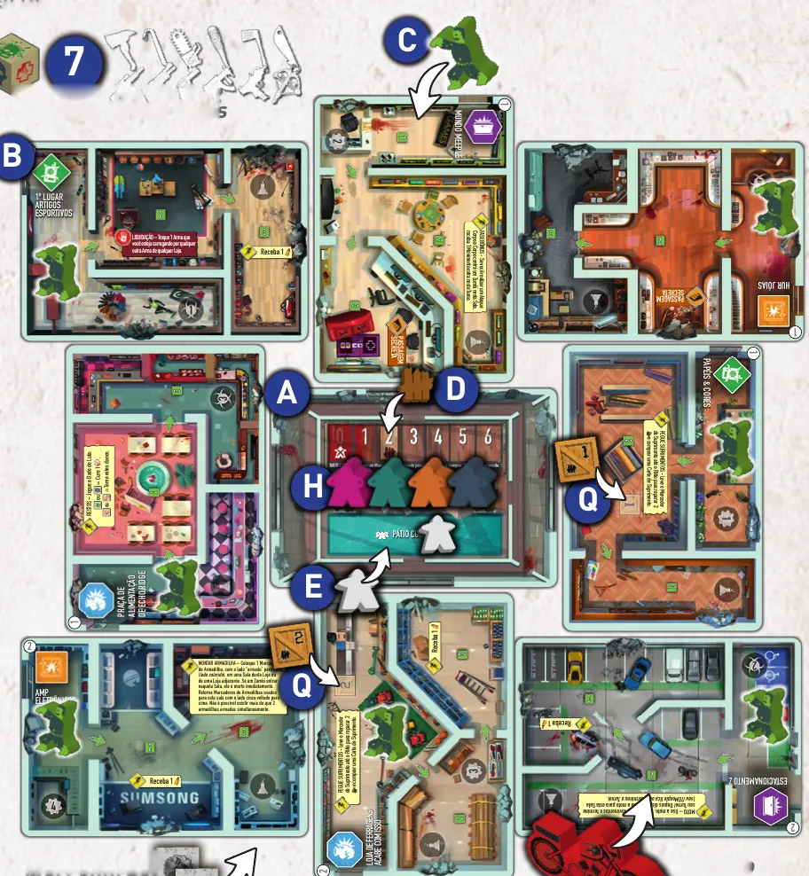
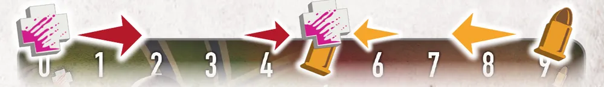
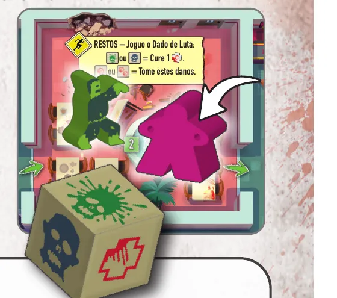
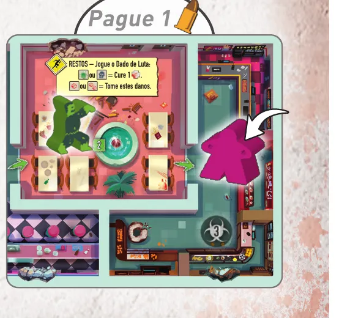
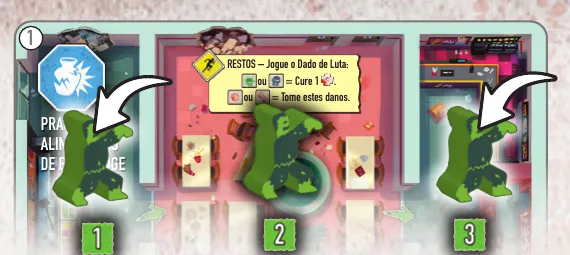
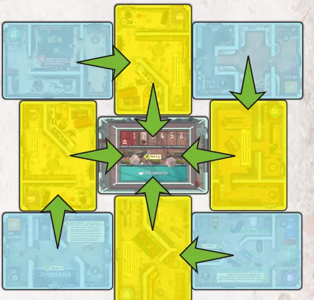

Para quem nunca jogou1 a 5 jogadores30 a 45 min14+Edição Meeple BR
· Redação Elite Boardgamers
Resumo em 1 minuto
Você move o seu sobrevivente pelo shopping, mata Zumbis para liberar as Lojas e, com o grupo, completa 3 Objetivos antes que o Monte de Procura acabe ou o Pátio caia.
No seu turno você se move 3 vezes e, depois de cada movimento, pode matar 1 Zumbi: corpo a corpo na Sala dele, ou a distância, por 1 munição, numa Sala vizinha.
Habilidade de Sala e coleta de Itens só funcionam com a Loja inteira, as 3 Salas, sem Zumbis.
Dano e munição andam na mesma trilha, um na direção do outro: quando se encontram, o personagem é Comido Vivo.
Como você aprende: 4 etapas, da mesa montada à contagem de pontosLeitura do essencial: cerca de 10 min
À vista, só o essencial para jogar. O que abre com + é explicação, exemplo, exercício ou regra de caso especial: abra quando precisar.
Comece a jogar em 4 minutos
Meta: em 4 minutos de leitura, montar a mesa no modo principal do manual (Cooperativo vs. Zumbi, 3 a 5 jogadores) e jogar o seu primeiro turno sem abrir o manual.
A ideia do jogo
Os humanos estão presos num shopping de 9 cartas: o Pátio no centro e 8 Lojas em volta, cada uma com 3 Salas. Juntos, precisam cumprir 3 Cartas de Objetivo antes que o Monte de Procura acabe. Um jogador é o Jogador Zumbi e enche o shopping de Zumbis depois de cada turno humano p. 3, 4 e 6.
Monte a mesa
O marcado (depois) se monta já e se usa mais tarde.
Pátio no centro, lado "Pátio Cooperativo" para cima; as 8 Lojas em volta, em posição e lado sorteados, Símbolos de Entrada para fora; 1 Zumbi em cada Símbolo de Entrada p. 4.
Barricada no espaço 2 do Pátio e 2 Marcadores de Sobrevivente no Estoque dele.
O Jogador Zumbi sorteia 3 Cartas de Jogador e fica com 1, lado Zumbi, com o Indicador de Horda no espaço 1. Os outros Zumbis são o estoque.
Cada humano sorteia 3 Cartas de Jogador e fica com 1, lado Humano: ITEMeeple na sala central do Pátio, Marcador de Dano no 0 e de Munição no 9.
3 Cartas de Objetivo sorteadas, lado cooperativo, com a preparação de cada uma (depois).
Monte de Procura (24 cartas) e Monte de Suprimento, como na etapa 1. O Jogador Zumbi compra 8 Cartas de Procura, escolhe 1 e a põe fechada na frente de cada humano p. 4 e 6.
Dado de Luta e 12 Itens à mão. Veículo, Armadilhas e Marcadores de Suprimento nos seus lugares (depois)p. 5.
Começa quem esteve num shopping mais recentemente p. 6.
Seu primeiro turno
A sua Carta de Jogador traz uma Faca para o Ataque Corpo a Corpo e uma Pistola para o Ataque a Distância (leitura da ilustração da p. 5; veja a etapa 3).
Mova-se 3 vezes, sempre para uma Sala vizinha. Salas que se encostam são vizinhas, mesmo em Lojas diferentes p. 8.
Depois de cada movimento, pode matar 1 Zumbi p. 9. Entrou em Sala com Zumbi: Ataque Corpo a Corpo obrigatório; role o Dado de Luta, que mata sempre e pode lhe dar 1 ou 2 danos ou um Acerto Crítico (1 movimento grátis, se quiser). Entrou em Sala sem Zumbi: pode atirar num Zumbi de Sala vizinha, por 1 munição.
Com a Loja inteira sem Zumbis, use também a habilidade da Sala e pegue cartas abertas ao lado da Loja p. 10 e 11.
Procure: após o terceiro movimento, revele a sua Carta de Procura ao lado da Loja onde está. Evento se resolve na hora p. 11.
O turno do Zumbi
Depois da sua Procura (p. 12 a 14): se o símbolo da carta revelada for o da entrada da Loja onde você está, você fez Barulho, e o Jogador Zumbi faz uma ação da Carta de Zumbi. Depois ele põe 2 Zumbis nas 2 Lojas com aquele símbolo, juntos numa delas ou 1 em cada (Zumbi na sua Sala: você está Cercado e leva 1 dano) e lhe entrega uma Carta de Procura fechada. Joga o humano da esquerda.
Ainda não precisa saber
Comido Vivo: etapa 1. Cercado em detalhe: etapa 2. Salas, Itens e Objetivos: etapa 3. Barricada e jogo sem Jogador Zumbi: etapa 4. Com 2 jogadores (ou sozinho), não há Jogador Zumbi: monte a mesa como acima, troque o que o bloco "Cooperativo sem Jogador Zumbi" da etapa 4 indica e use o turno da IA no lugar do turno do Zumbi p. 16 e 18.
Como a partida acaba
Os humanos vencem ao completar os 3 Objetivos. O Zumbi vence se, sem Marcador de Sobrevivente no Pátio, um humano é Comido Vivo ou a Barricada chega a 0, ou quando todas as Cartas de Procura foram reveladas e cada humano jogou um último turno p. 15.
Prefere ver? Regras em vídeo, em português. Ele complementa este guia; em caso de diferença, vale o manual.
Tiny Epic Zombies - Como Jogar, canal Romir Play House · abrir no YouTube
0Antes de tudo: o que é este jogoOpcional
Abrir esta seção
Tiny Epic Zombies é um jogo de sobrevivência num shopping tomado por mortos-vivos, com cinco modos: Cooperativo vs. Zumbi (3 a 5 jogadores, um deles o Jogador Zumbi), Cooperativo contra uma Inteligência Artificial (2 a 4), dois competitivos e o Solo p. 3. O manual ensina primeiro o Cooperativo vs. Zumbi, e os outros mudam poucas regras (p. 16 a 18); este guia segue a mesma ordem.
Os humanos correm contra dois relógios: o Monte de Procura, que perde uma carta a cada turno humano, e a Barricada do Pátio, que cai com os Zumbis que não cabem nas Lojas e, a cada queda, leva um Marcador de Sobrevivente p. 6 e 13. E cada humano cuida de uma trilha em que dano e munição andam um na direção do outro p. 7.
1Como este guia ensinaOpcional
Abrir esta seção
São quatro etapas: mesa, dano e munição; mover e matar Zumbis; usar as Lojas vazias; turno do Zumbi e fim da partida. Cada uma traz explicação, passo a passo, casos especiais em blocos que se abrem com um toque e exercícios (toque numa opção para ver a certa). No final, uma avaliação indica o que reler, e uma folha de consulta vai para a mesa.
2Etapa 1: montar a mesa e ler dano e munição
Por que funciona assim

A mesa montada: o Pátio no centro, com a Barricada no 2 e os ITEMeeples dos humanos, e as 8 Lojas em volta, cada uma com um Zumbi na entrada. Os Marcadores de Suprimento numerados ficam em duas Lojas, e a Moto na sua marcação. Ilustração: manual Meeple BR p. 5

A trilha da Carta de Jogador: o dano entra pela esquerda, a partir do 0, e a munição sai pela direita, a partir do 9. Quando os dois marcadores se encontram, o personagem é Comido Vivo. Ilustração: manual Meeple BR p. 7Ver um exemplo resolvidoPratique esta etapa: exercícios com respostas
3Etapa 2: mover e matar Zumbis
Por que funciona assim
Dado de Luta
Efeito p. 9
Acerto Crítico
pode se mover 1 Sala de graça
Sem efeito
nada mais acontece
1 dano
receba 1 dano
2 danos
receba 2 danos

Ataque Corpo a Corpo: o ITEMeeple entra na Sala do Zumbi e rola o Dado de Luta. Ilustração: manual Meeple BR p. 9

Ataque a Distância: o ITEMeeple entra numa Sala vazia, paga 1 munição e mata o Zumbi da Sala vizinha. Ilustração: manual Meeple BR p. 9Regra adicional: Acerto CríticoRegra adicional: CercadoVer um exemplo resolvidoPratique esta etapa: exercícios com respostas
4Etapa 3: Lojas vazias, Itens e Objetivos
Por que funciona assimRegra adicional: Marcadores de SuprimentoRegra adicional: Passagem SecretaRegra adicional: Largar e trocar ItensRegra adicional: Salas do exemplo do manualRegra adicional: Objetivo de exemplo: Consertar o HelicópteroSobre a edição: Faca e PistolaVer um exemplo resolvidoPratique esta etapa: exercícios com respostas
5Etapa 4: o turno do Zumbi e o fim da partida
Por que funciona assim

Adicionar Zumbis: a Loja tinha um Zumbi na Sala 2; o primeiro novo vai para a Sala 1, e o segundo pula as Salas ocupadas e vai para a Sala 3. Ilustração: manual Meeple BR p. 13

Para onde vai o Zumbi quando a Loja está cheia: das Lojas de Esquina, em azul, para a Loja seguinte no sentido horário; das Lojas de Corredor, em amarelo, para a Barricada do Pátio. Ilustração: manual Meeple BR p. 13Regra adicional: Habilidades dos ZumbisRegra adicional: SangrandoRegra adicional: Cooperativo sem Jogador Zumbi (2 a 4 jogadores)Sobre a edição: Sem Jogador Zumbi, o que muda no restoSobre a edição: Barulho no PátioVer um exemplo resolvidoPratique esta etapa: exercícios com respostas
6Situações especiaisOpcional
Abrir esta seçãoRegra adicional: Competitivo vs. Zumbi (3 a 5 jogadores)Regra adicional: Fim do CompetitivoRegra adicional: Competitivo sem Jogador Zumbi (2 a 4) e SoloRegra adicional: Veículo e Armadilhas
7Avaliação finalOpcional
Abrir esta seção
Responda sem consultar. Cada resposta diz o que reler se errar.
O que você faz antes de qualquer ação no seu turno?
A Regra de Ouro p. 8. Se errou, releia a etapa 2.
Dano em 4, munição em 6. Você atira duas vezes. O que acontece?
Os marcadores se encontram no 4 p. 7. Se errou, releia a etapa 1.
Você limpou uma Sala, mas a Loja ainda tem um Zumbi. Pode pegar a carta aberta ao lado da Loja?
Coletar só com a Loja livre de Zumbis p. 11. Se errou, releia a etapa 3.
Você chega ao Pátio com um Marcador de Suprimento. O que ganha?
Barricada mais 2, até 6, e 1 carta de Suprimento p. 10. Se errou, releia a etapa 3.
O Jogador Zumbi põe 2 Zumbis numa Loja com Zumbi só na Sala 2. Onde eles ficam?
Sala de menor número sem Zumbi, 1 por Sala p. 13. Se errou, releia a etapa 4.
A última Carta de Procura foi revelada. E agora?
Último turno de cada humano e fim p. 14 e 15. Se errou, releia a etapa 4.
8Para consultar durante a partida
Turno Humano (p. 8 a 11):
Passo
O que fazer
3 Movimentos
sempre para uma Sala vizinha; primeiro se move, depois age
Depois de cada movimento
A. matar 1 Zumbi; B. habilidade da Sala ou Marcador; C. coletar Itens (B e C só com a Loja sem Zumbis)
Procura
revele a Carta de Procura ao lado da Loja; Evento se resolve na hora
Matar: Sala com Zumbi, Ataque Corpo a Corpo obrigatório, sempre mata, role o Dado de Luta. Sala sem Zumbi, Ataque a Distância numa Sala vizinha por 1 munição.
Dado de Luta
Efeito
Acerto Crítico
1 movimento livre, opcional
Sem efeito
nada
1 dano / 2 danos
receba o dano
Trilha: dano começa em 0 e anda para a direita; munição começa em 9 e anda para a esquerda. Encontraram ou cruzaram: Comido Vivo.
Itens: 1 Arma Corpo a Corpo e 1 de Longo Alcance; Mochila a qualquer momento do turno; Pegar na hora. Trocar Itens só largando e coletando.
Turno do Zumbi (p. 12 a 14):
Passo
O que fazer
Verificar Ruídos
símbolo da carta igual à entrada da Loja do humano: ação do Indicador de Horda, sobe 1
Adicionar Zumbis
2 Zumbis nas Lojas com o símbolo; Sala de menor número livre
Entregar carta
1 Carta de Procura fechada ao humano; mão vazia, compra 4
Loja cheia: Esquina passa à seguinte no sentido horário; Corredor bate na Barricada. Barricada 0: sai 1 Sobrevivente, Barricada volta a 2. Suprimento no Pátio: Barricada mais 2 (máximo 6).
Cercado: 1 dano na hora; no seu turno, saia sem matar esse Zumbi.
Sem Jogador Zumbi: símbolo diferente, 2 Zumbis (1 por Loja); igual, 4 (2 por Loja).
Fim: 3 Objetivos, humanos vencem na hora. Zumbi vence se, sem Sobrevivente no Pátio, alguém é Comido Vivo ou a Barricada chega a 0, ou com o Monte de Procura revelado e o último turno jogado.
Meeple BR. Página do produto (1 a 5 jogadores, 30 a 45 minutos, maiores de 14 anos, componentes). Consultada em 01/11/2026.
Não foram encontrados FAQ nem errata oficiais em português.
Regras conferidas no manual oficial da edição brasileira, publicado pela Meeple BR (Tiny Epic Zombies, "Regras de Sobrevivência", 20 páginas, versão 2.0, tradução de Romir G. E. Paulino, arquivo de novembro de 2020). Os nomes são os impressos nesse manual, e as páginas citadas são as dele.